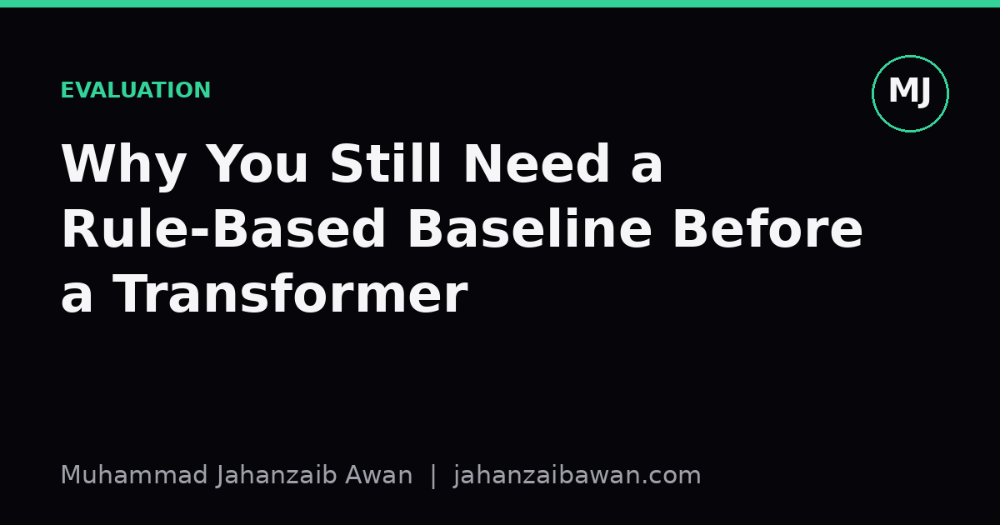

Why You Still Need a Rule-Based Baseline Before a Transformer
Before you fine-tune anything, write a regex. It will tell you more about your task than a leaderboard ever will.

The temptation to skip the boring step
Whenever I start a text classification or information extraction task now, there is a pull towards opening a notebook, loading a pretrained transformer, and fine-tuning within the hour. The tooling makes this almost frictionless, and the results often look respectable on the first try. But I have learned, sometimes the hard way, that skipping a rule-based baseline is skipping the single cheapest source of information about your dataset. A baseline is not a formality to satisfy a reviewer. It is a diagnostic tool.
Consider a sentiment classification task on product reviews. If I jump straight to fine-tuning a transformer and get 91 percent accuracy, that number means almost nothing on its own. Is 91 percent impressive? Is it barely above chance given the class balance? Is the model actually reading sentiment, or has it learned that reviews mentioning a refund almost always score negative, which would be true of a keyword list as well? Without a comparison point built from simple, interpretable logic, I cannot answer any of these questions, and I am left trusting a number I do not understand.
A rule-based baseline forces me to engage with the data before I engage with the architecture. Writing a small set of keyword rules, a regex for named entities, or a handful of heuristics based on sentence length and punctuation means reading dozens or hundreds of examples closely. That reading is where I notice mislabelled rows, duplicated text across train and test splits, or a spurious correlation that any model, however sophisticated, will happily exploit.
A worked example with made-up but realistic numbers
Suppose I am building a classifier to flag customer support tickets as urgent or not urgent, and the dataset has 10,000 labelled tickets with roughly 12 percent marked urgent. A majority-class baseline that always predicts not urgent already achieves 88 percent accuracy, which sounds strong until you realise it has zero recall on the class that actually matters. This is the first and most basic rule-based check, and it costs nothing to compute. If my eventual transformer model reports 89 percent accuracy, I now know it is barely better than doing nothing useful at all.
Next, I write a handful of keyword rules: tickets containing words like outage, cannot access, or billing error get flagged urgent. Suppose this simple rule set achieves 76 percent precision and 61 percent recall on urgent tickets, giving an F1 score around 0.68. That single afternoon of work has now given me a real target. Any transformer I fine-tune needs to clearly beat an F1 of 0.68 to justify the added complexity, training time, and inference cost. If my fine-tuned model lands at 0.71, that is a modest but genuine improvement. If it lands at 0.69, I have to ask seriously whether the extra GPU hours and maintenance burden are worth it.
This exercise also surfaces leakage. While building the keyword rules I might notice that tickets from a particular customer account are disproportionately urgent, not because of content but because that account has a support contract requiring faster triage. If that account identifier leaked into my feature set or my train and test split was not stratified by account, both my rule-based system and my transformer could be learning an artefact of the data collection process rather than anything about urgency itself. I would far rather catch this while writing simple rules than after a week of hyperparameter tuning on a model whose internal reasoning I cannot easily inspect.

What baselines protect you from
The deeper reason rule-based baselines matter is that they are honest about what they are doing. A regex either matches or it does not, and I can read the rule and know exactly why a prediction was made. A fine-tuned transformer, by contrast, can achieve a similar or better score for reasons that are opaque, and sometimes those reasons are shortcuts: a token that happens to correlate with the label in this particular dataset but has no real connection to the task. Without a transparent baseline to compare against, it is far harder to notice when a complex model is right for the wrong reasons.
There is also a cost argument that gets underweighted in academic settings but matters enormously in practice. Fine-tuning and serving a transformer carries real infrastructure cost, latency, and engineering overhead compared with a rule-based or lightweight statistical system. If a well-constructed baseline using TF-IDF features and logistic regression achieves 85 percent of the performance of a transformer at a fraction of the computational cost, that is a legitimate business decision point, not a failure of ambition. I have seen teams commit to transformer-based pipelines before establishing whether the simpler system was actually inadequate, and the result is unnecessary complexity that nobody wants to maintain eighteen months later.
None of this is an argument against transformers. They are often genuinely necessary, particularly for tasks involving nuanced context, long-range dependencies, or language where keyword matching simply cannot capture meaning. The point is sequencing. A rule-based baseline, built quickly and evaluated honestly on a leakage-free split, tells you what the floor looks like and what shape of errors exist in your data. It is far cheaper to discover a labelling problem by staring at twenty misclassified examples from a simple rule set than by debugging a transformer that has somehow learned to ignore 30 percent of your training signal.
The practical takeaway
Before reaching for a transformer, spend half a day on a baseline that a colleague could understand by reading it rather than by trusting a loss curve. Write the keyword rules, compute the majority class score, check the class balance, and look closely at the split to confirm nothing has leaked across it. Record the baseline's precision, recall, and F1 honestly, including its failure modes. Only then fine-tune the transformer, and judge it against that number rather than against an abstract sense of what feels impressive.
This habit costs very little time relative to a full training run, and it consistently pays for itself. It gives you a sanity check, a cost-benefit reference point, and, more often than I would like to admit, an early warning that something in the dataset needs fixing before any model, simple or otherwise, can be trusted.